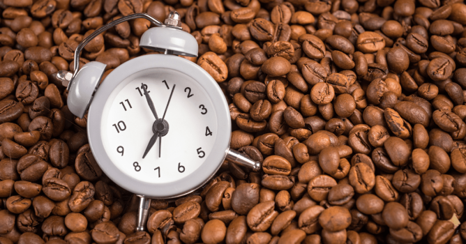
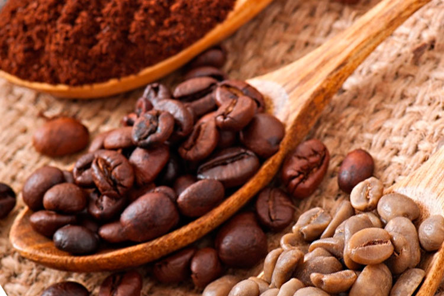
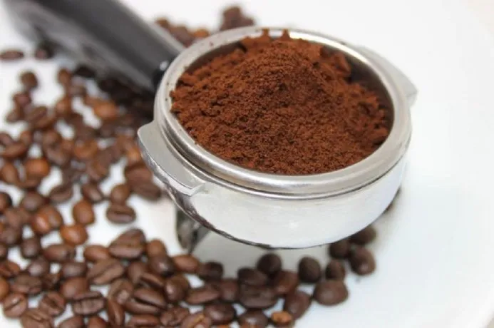

Novedades y noticias del mundo cafetero

Qué beneficios trae tomar el café solo
La ciencia confirma que ingerir la infusión en su estado puro favorece la memoria, protege el sistema cardiovascular y acelera el metabolismo al evitar los aditivos dulces; qué más ofrece este método particular para la bebida
El consumidor se interesa más por el origen y la molienda
En Argentina la bebida nacional es el mate, pero en el mundo lo que más se toma es café: es la bebida que más se consume después del agua. Entonces, se cree que es un fenómeno global y se considera que esta tendencia va a llevar a Argentina a tener cada vez más consumo

Cuanto dura el efecto del cafe?
El efecto del café comienza a sentirse entre 15 y 45 minutos después de su ingesta, alcanzando su punto máximo entre los 30 y 60 minutos. Por lo general, los efectos estimulantes duran entre 3 y 5 horas en promedio, aunque la cafeína tiene una vida media de 5 a 6 horas, permaneciendo en el organismo hasta 10 horas o más en personas sensibles.

El cafe afecta distinto a cada persona
principalmente por diferencias en la genética (metabolismo hepático), la edad, el sexo y el nivel de tolerancia adquirido. Mientras algunos sienten mayor energía y concentración, otros experimentan ansiedad, nerviosismo o insomnio debido a la rapidez con la que metabolizan la cafeína.

Café arábica: Cosechas récord alivian preocupaciones globales
Esta abundancia de oferta, potenciada por condiciones climáticas favorables en Brasil, está aliviando las tensiones en la cadena de suministro global. Sin embargo, la fuerte caída en los precios internacionales, que aún se encuentran casi un 25% por debajo de los máximos históricos alcanzados en febrero de 2025, está generando serias dificultades en otros países productores

Startup colombiana revoluciona el cultivo de café reduciendo un 40% el uso de fertilizantes
La innovación, presentada oficialmente esta semana en el "Foro de Innovación Agropecuaria de las Américas" celebrado en Bogotá, consiste en un consorcio de hongos benéficos y bacterias nativas seleccionadas de los suelos de la propia región cafetera colombiana. Estos microorganismos actúan como potenciadores naturales, facilitando la absorción de nutrientes como el fósforo y el nitrógeno, y protegiendo las raíces de enfermedades comunes como la roya.